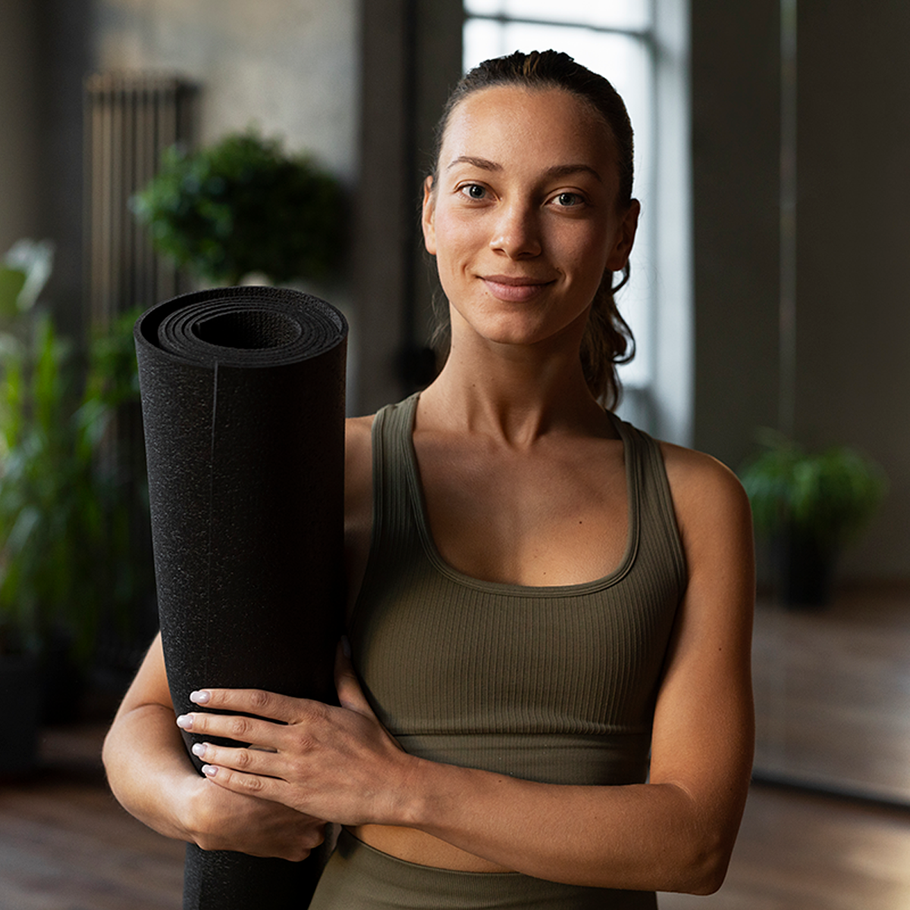

Maya Ellison, Lead Instructor

Maya has taught community yoga for twelve years with a focus on beginners and older adults. Her classes use plain language, multiple pose options, and time to rest between sequences.

Maya has taught community yoga for twelve years with a focus on beginners and older adults. Her classes use plain language, multiple pose options, and time to rest between sequences.
Jordan designs supported practices for students managing fatigue, desk tension, or limited mobility. Private sessions with Jordan include a written home plan after the first visit.
If you need a specific accommodation before your first visit, include it in the message field on the Events page form.